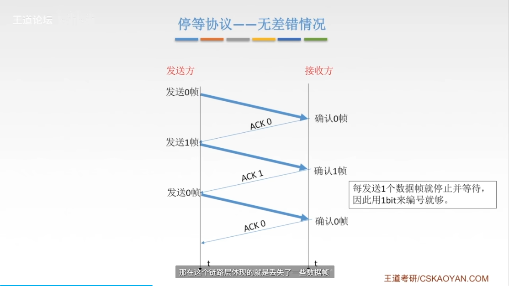

1计网体系结构
组成
清华和北大机房中的电脑有可能又相同的ip 192.168.0.1


分类

电路交换、报文交换、分组交换的区别，存储转发
- 电路交换
- 定义：在通信双方之间建立一个专用的通信线路，数据以固定的速率传输。
- 优点：传输延迟小，适合实时通信。
-
缺点：资源利用率低，建立连接时间长。
- 例子：传统电话系统。
-
报文交换
- 定义：将数据分成多个报文，独立传输，最终在目的地重新组装。
- 优点：资源利用率高，适合大规模数据传输。
- 缺点：传输延迟大，不适合实时通信。
-
例子：电子邮件。
-
分组交换
- 定义：将数据分成多个小分组，独立传输，路由选择灵活。
- 优点：资源利用率高，适合多种类型的通信。
- 缺点：传输延迟不稳定，可能出现丢包。
- 例子：互联网。

指标
速度

速率和存储单位换算单位不一样，1B=8b，1KB=1024B，1MB=1024KB，1GB=1024MB。


时间


体系结构 参考模型
对等实体之间才有协议，是因为它们需要在相同的层次上进行通信，以便理解彼此的消息和行为。

接口和服务是不同的概念。接口定义了不同层次之间的交互方式，而服务则是一个层次向上层提供的功能或操作。接口是服务的实现方式，而服务是通过接口提供给上层的功能。

OSI

路由器只接受底下三层，网关和交换机下面两层
上面四层是直接端到端的链接，点到点是下面三层
 七层分别结构
七层分别结构


TCP IP


5层参考模型


物理层

 单工 半双工 双工
串行和并行
单工 半双工 双工
串行和并行
 同步和异步
同步和异步

码元 速率 带宽
码元是最小可分的波形组合，比如4进制就是四种00 01 10 11

奈氏准则 香农定理

香农定理

 两者曲奇小
两者曲奇小
编码与调制


曼彻斯特编码
差分曼彻斯特编码


采样定理
数据交换方式
 电路交换
电路交换

 报文交换
报文交换
 分组交换
分组交换

数据报
虚电路方式


传输介质

光纤，光的频率非常高，所以带宽非常大


非导向性传输介质

物理层设备

数据链路层


封装成帧


差错控制
检错编码


纠错编码


校验码负责的位数中1的个数要是偶数

可靠传输和流量控制
